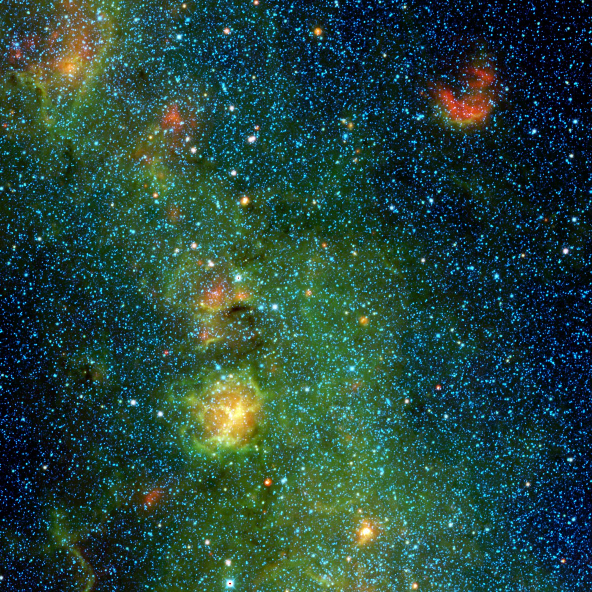

Expeditions and fieldwork
Good science in the field depends on careful preparation. I plan, coordinate and carry out field campaigns in demanding, remote environments, combining systematic sampling with thorough hazard assessment, wilderness safety and conservation.

Searching for meteorites in Antarctica
In the 2013–14 field season I joined ANSMET, the Antarctic Search for Meteorites, at the Miller Range in Antarctica. Teams spend weeks living in tents on the ice, systematically searching for meteorites that collect on the surface where glaciers carry them.
To add: a few lines about your season: what it was like, how many meteorites the team found, what you took away from itCave exploration and logistics
With the Caves and Karst Exploration Society (CAKES), I plan and lead expeditions into technical cave systems, handling the full cycle: route and risk assessment, remote logistics, team safety and scientific sampling.
To add: expeditions you've led or joined (place, year, purpose)Training and safety
I hold formal training in fieldwork safety and expedition planning.
To add: list each certification with the issuing body and year (e.g. wilderness first aid, caving or rope-access qualifications)Work with me
- Expedition leader for scientific field campaigns
- Scientific consultant for exploration teams and media
- Field mentor for students and early-career researchers
Get in touch about field collaborations.